Unduh Slide -> https://github.com/takin/sw-seminar
Contoh Coding -> https://github.com/takin/workshop-semantic-web
Syamsul Muttaqin
Riwayat Pendidikan
- SD Negeri Kumbung
- MTs Nahdlatul Wathan Paok Motong Lombok Timur
- Teknik Elektro SMK Negeri 3 Mataram
- S1: Teknik Elektro STTNas Yogyakarta
- S2: Ilmu Komputer Universitas Gadjah Mada
Job Experiences
- Lab Test Engineer at HYPEREND Media Magazine
- Technical Support at DPJ Jogja
- Web Developer at UR-HARDWARE
- CTO at PlayfulDev
- Lecturer at STMIK Syaikh Zainuddin NW Anjani
How big the web is...?
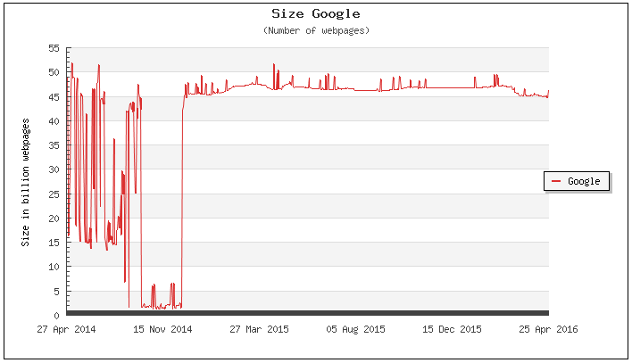Google indexed about 45 - 50 billion pages...
Source: www.worldwidewebsize.com, as of April 2016
How to find informations...
Pencarian informasi berbasis keyword terkendala masalah ambiguitas bahasa alami
-
Satu kata memiliki makna (semantik) berbeda
"...di taman safari banyak terdapat Kijang yang mati."
"...jumlah penjualan mobil Kijang dari tahun ke tahun terus meningkat."
IR problems
- Banyak kata/frasa memiliki makna sama
"Siapakah rektor UGM ?"
"Siapakah rektor Universitas Gadjah Mada ?"
"Kota paris van java terletak di provinsi mana?"
"Kota Bandung terletak di provinsi mana ?"
Kijang ????
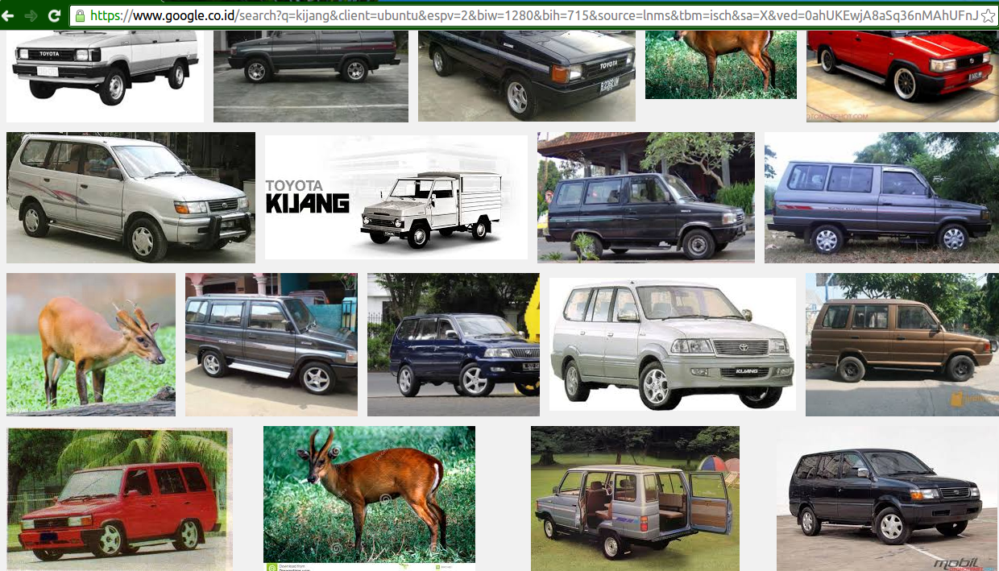The Importance of meaning
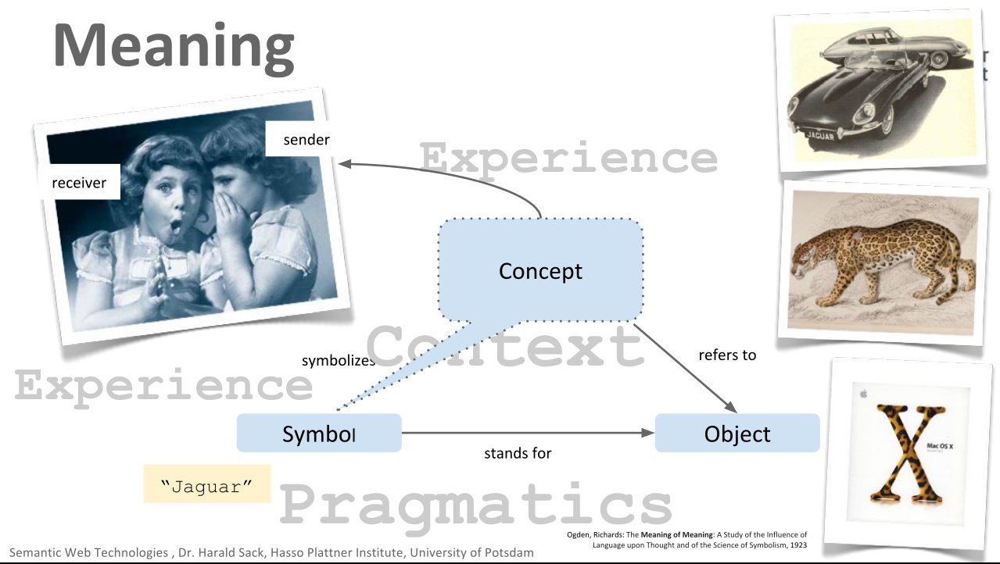Komunikasi akan "nyambung" apabila
-
Pesan dikirim dengan benar
Sentence / Kalimat di bangun dengan benar
- Penerima pesan harus dapat menterjemahkan pesan dengan benar (Penerima pesan harus paham)
The Importance of meaning
Pemahaman bergantung pada
- Konteks
Pemahaman tentang konteks bergantung pada pengalaman (pengetahuan) masing-masing
- Pragmatik
Tujuan penggunaan kata / kalimat tertentu
The (Current) Web Problems...
- Konten disajikan dalam bentuk HTML, dimana HTML hanya berfokus pada
- Bagaimana menyajikan konten
- Bagaimana menghubungkan halaman web (link antar halaman)
- HTML tidak mendeklarasikan makna semantis konten
- Mesin tidak memahami makna semantis konten web yang ditampilkan
What is the solution ?
"Ajari" komputer untuk memahami makna konten yang disajikan
-
Gunakan teori Pemrosesan Bahasa Alami
- Analisa statistik
- Machine Learning
- Gunakan Teknologi Semantic Web
- Berikan anotasi atau metadata pada setiap objek yang memiliki definisi tertentu sehingga dapat dipahami oleh komputer
"The Semantic Web is an extension of the current web in which information is given well-defined meaning, better enabling computers and people to work in cooperation"
--Tim-Berners-Lee--
Motivation
- Memudahkan komputer dalam memahami konten web secara semantis
- Web difungsikan sebagai desentralize database yang menydiakan informasi baik secara eksplisit maupun implisit
- Memungkinkan pertukaran informasi antar web sehingga dapat di proses oleh komputer secara autonomous
The Semantic Web Stack
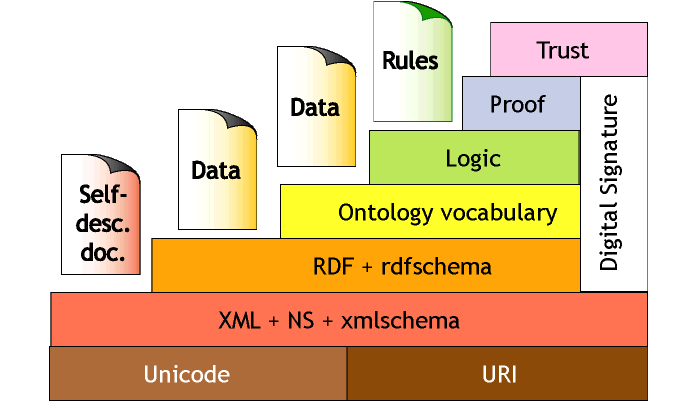Semantic Web Technology
- Resource Description Framework (RDF)
- Standar cara merepresentasikan knowledge pada web
- RDFS
- Menambahkan makna implisit yang mungkin dibentuk dari statment RDF
- OWL
- Menambah implicit knowledge yang tidak dapat dibangun melalui RDFS
Semantic web technology
- RDFa
- Standar cara membangun idata terstruktur pada HTML
- SPARQL
- Bahasa query RDF
Creating structured data
- Data terstruktur yang dapat dipahami oleh komputer dibangun dengan menggunakan directed graph
- Sebuah statement directed graph terdiri dari subjek, predikat dan objek
- Kumpulan triple statement membentuk graph
Building Statement
”Jaguar adalah mobil buatan Jaguar Land Rover”
creating structured data
-
Segala hal yang ingin di statementkan harus memiliki identifikasi unik
- URI (Uniform Resource Identifier)
- URN (Uniform Resource Name)
Sehingga setiap statment mengacu pada URI/URN tersebut memiliki makna yang sama
RDF Triple
”Jaguar adalah mobil buatan Jaguar Land Rover”
- Subjek dan predikat harus berbentuk URI
- Objek dapat berupa URI atau Literal
Triple Graph
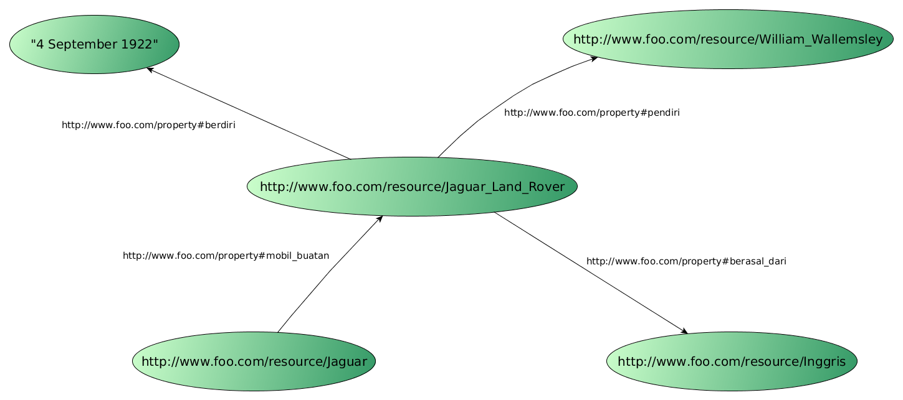Adding more knowledge
Knowledge yang disajikan dalam bentuk RDF hanya berupa data implisit
- Apa itu Jaguar ??
- Apa itu Jaguar Land Rover ??
Untuk memperkaya pengetahuan yang bersifat eksplisit maka dibutuhkan ontology!!
ontology
Standar cara mendefinisikan domain pengetahuan tertentu secara formal dan eksplisit
Pengetahuan itu sendiri dapat berupa pengetahuan implisit yang didapat dari proses inferensi dari informasi eksplisit di dalam ontologi
RDF Schema
RDF Schema
- Tambahkan statment tentang properti prop:mobil_buatan
- rdfs:domain db:Mobil_Mewah
- rdfs:range db:Perusahaan_Otomotif
RDF Schema
RDF Schema
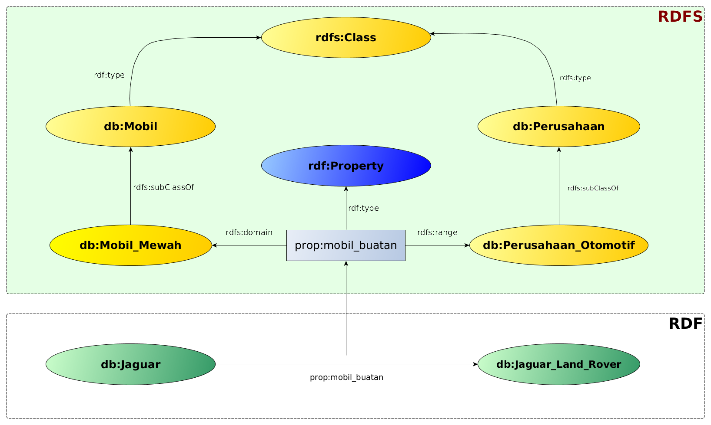RDF Schema
..dengan triple statement dan skema RDFS sebelumnya, maka didapatkan informasi eksplisit
- Jaguar adalah sebuah Mobil Mewah
- Jaguar adalah sebuah Mobil
- Jaguar Land Rover adalah sebuah Perusahaan Otomotif
- Jaguar Land Rover adalah sebuah Perusahaan
wikipedia to dbpedia
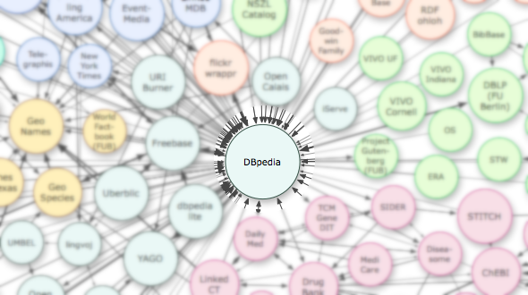wikipedia to dbpedia
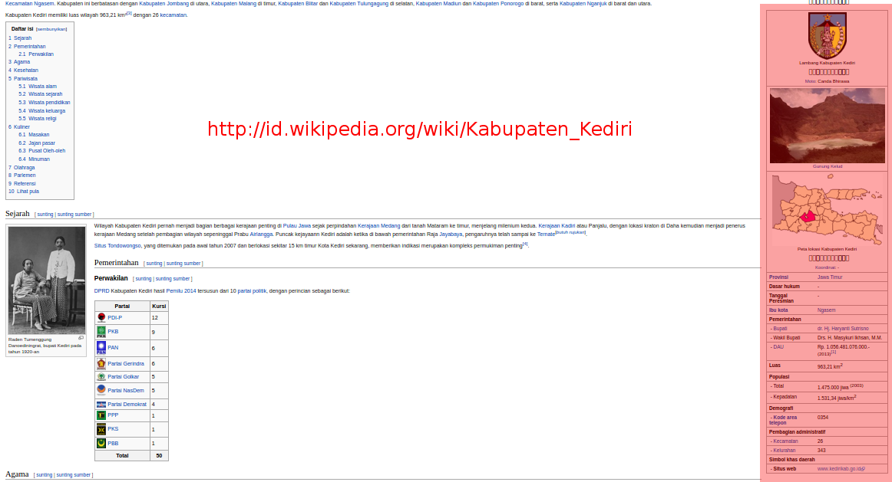wikipedia to dbpedia
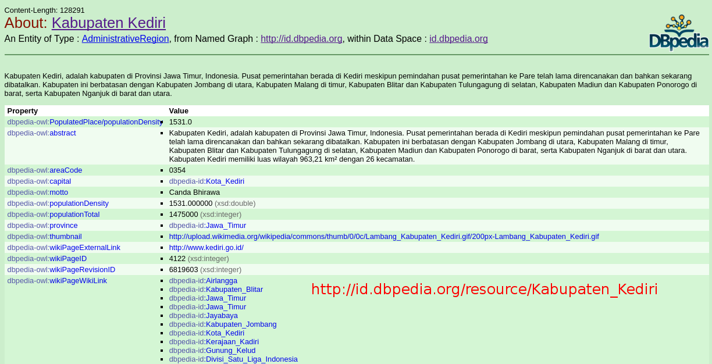SPARQL Query
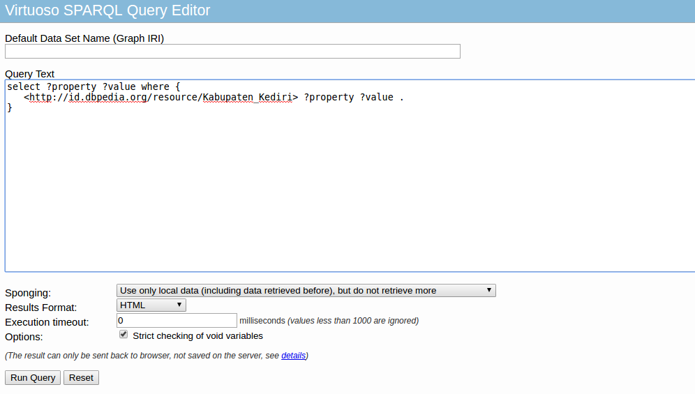SPARQL Query Result
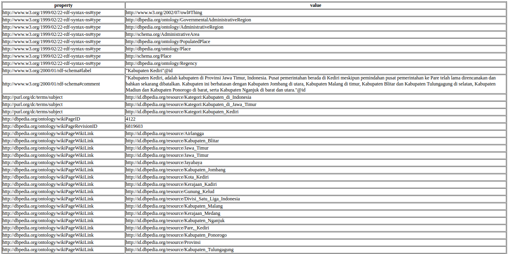Implementation
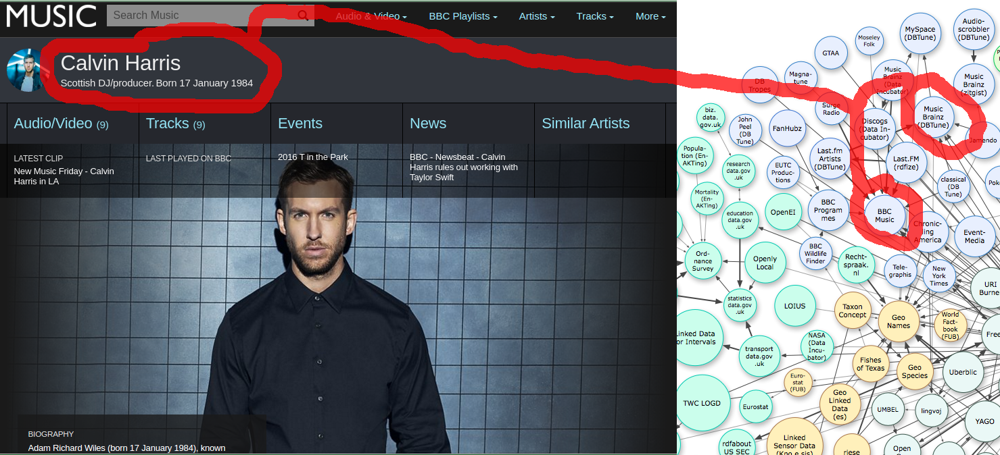Implementation
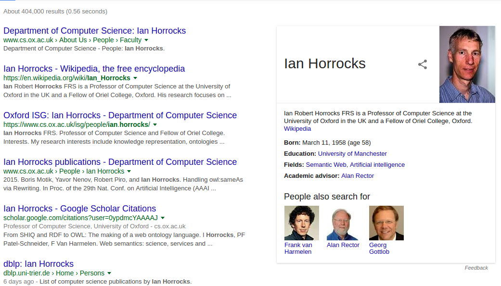Implementation
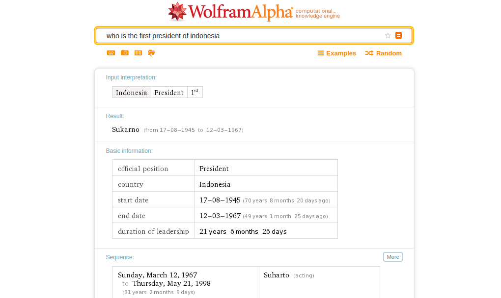Implementation

Find me on